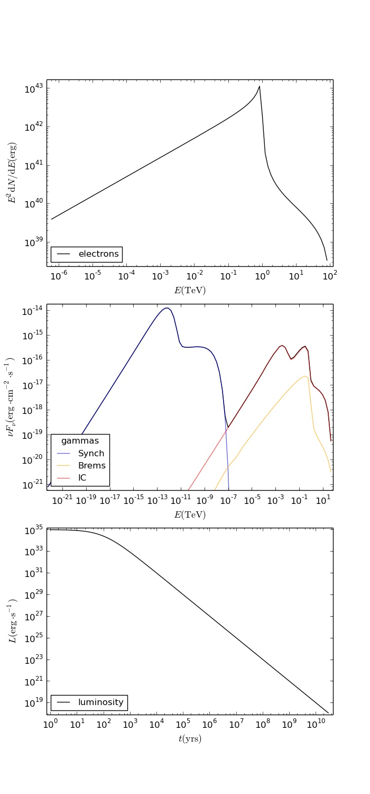

Level 3: Photon Spectrum, Particle Evolution, Variable Luminosity¶
In this level, a variable luminosity of the injecting source is added to the model in level 2. Here, a typical spin-down luminosity function is chosen, and thus this model represents a basic PWN model.
The real script TutorialLevel3.py and parameter file
TutorialLevel3Params.dat can be found in the docu/tutorial/ directory.
The add the time-dependent source-luminosity to the model, we only have to change two things:
- add a luminosity function, e.g.
def GetPulsarSpindown(tc, age, l0): t = np.logspace(0,math.log10(1.e6*age),300) puls = [] n = 0 for i in t: puls.append([]) puls[n].append(i) puls[n].append(l0/math.pow(1.+i/tc,2.)) n = n+1 return pulswhere
tcis the characteristic spin-down time scale andl0is the initial source luminosity.Warning
You have to fill all kinds of lookups (also those used in the later levels) well beyond the source age. To make sure nothing goes wrong I recommend crazy values like 1.e6*age.
- replace
fp.SetLuminosity(GetPulsarSpindown(tc,age,lum))by
fp.SetLuminosityLookup(puls)
That’s it! The result looks like this (again plotted with matplotlib):
{kind=link}